Version 1 (Phases 0–4), October 2026. Screens in this guide are shown in Hindi, the app's default language; every button name is given in Hindi as it appears, with its meaning in English.
Contents
Getting started — open, install, log in
The screen: header and the five tabs
Owner and staff — who can do what
First-day setup (owner)
A normal day, start to finish
Receiving stock — माल आया
Printing barcode labels
Selling — बेचें
Discounts, untagged items, returns and exchanges
Udhaar — उधार
Stock — स्टॉक
Closing the day — दिन का हिसाब
Reports and CSV downloads (owner)
Settings (owner): prices, markup, staff
How the app keeps your money safe
Problems and answers (FAQ)
Hindi ↔ English button list
What this app does
It replaces the paper notebook. You tag every item once when it arrives, scan it when it sells, and the app keeps count of stock, sales, udhaar and cash — no writing.
Receive stock: enter the supplier's bill; the app suggests the selling price and makes a barcode for every size.
Print labels: one sticker per piece with name, size, price and barcode.
Sell: scan the barcode with the phone camera or a scanner gun, tap Cash / UPI / Udhaar. Stock goes down by itself.
Udhaar: who owes how much and since when; record payments; send WhatsApp reminders.
Close the day: count the cash drawer and see if anything is short.
Reports (owner): sales, profit, best and slow items, stock value, Excel downloads.
1. Getting started
Open the app
On the phone, open Chrome (Android) or Safari (iPhone) and go to garment-shop-wine.vercel.app.
Put it on the home screen (do this once)
Android / Chrome: tap the ⋮ menu at the top right → Add to Home screen (or Install app) → Add.
iPhone / Safari: tap the Share button → Add to Home Screen → Add.
A green ₹ icon called Dukaan appears. Open the app from that icon from now on — it opens full screen like a normal app.
Log in
Type your 10-digit mobile number in मोबाइल नंबर.
Type your 6-digit PIN in 6 अंकों का PIN.
Tap अंदर जाएँ (Log in).
The owner gives each staff member their number and PIN (see chapter 14). There is no SMS/OTP — nothing to wait for.
Change language
The button at the top right switches language: it shows English when the app is in Hindi, and हिंदी when it is in English. Each person's choice is remembered, even on another phone.
Log out
Tap बाहर निकलें under your name at the top. Always log out if the phone is shared or lost.
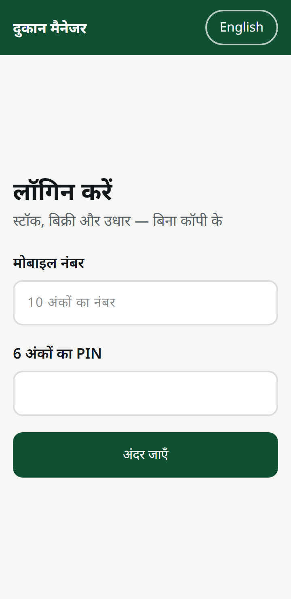
Login screen
2. The screen: header and the five tabs
Header (green bar at the top)
Shop name, your name and role (मालिक = owner, स्टाफ = staff).
सेटिंग — settings (owner only).
बाहर निकलें — log out.
Language button (English / हिंदी).
Bottom tabs
Tab
Meaning
Use it to…
बेचें
Sell
Scan and sell, returns, discounts, today's sales
स्टॉक
Stock
See what is left of every size; reprint a label
माल आया
Receive
Enter a supplier bill and print labels
उधार
Udhaar
Customer credit, payments, reminders
रिपोर्ट
Reports
Close the day; owner reports and downloads
Every main job takes 3 taps or fewer. If something needs more, tell the person who set up the app.
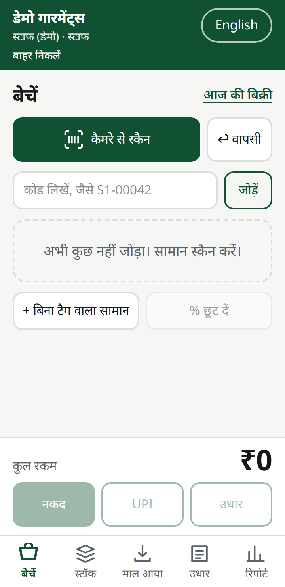
The Sell tab (first screen after login)
3. Owner and staff — who can do what
Job
Owner
Staff
Sell, scan, take returns and exchanges
✓
✓
Change a selling price
✓ (while entering a bill)
✗ never
Give a discount
✓
only with the owner's PIN
Enter a supplier bill, print labels
✓
✓
See cost price, bill totals, supplier dues
✓
✗
Pay a supplier bill later
✓
✗
Add udhaar customers, record udhaar payments, send reminders
Settings: price rounding, markup %, add or switch off staff
✓
✗
Delete any record
✗
✗
These rules are enforced by the database on the server, not just hidden on the screen. Even a staff member who knows computers cannot see cost prices or change a price.
4. First-day setup (owner)
Do these once, in this order, before the first real day.
Step 1 — Prices and markup
सेटिंग → दुकान और दाम:
How to round prices (दाम कैसे गोल करें). Your shop uses ₹10 तक ऊपर: the suggested price is always rounded up to the next ₹10 (₹453 → ₹460).
Markup % per category (मुनाफ़ा %). 50% means a ₹300 shirt is suggested at ₹450. The grey line "₹100 का माल → ₹150" shows the effect live.
Min stock (कम से कम स्टॉक): sizes at or below this show in yellow on the Stock tab.
Tap सेव करें. See chapter 14 for details.
Step 2 — Add staff
सेटिंग → स्टाफ → name, mobile number, a 6-digit PIN → सेव करें. Tell each person their number and PIN.
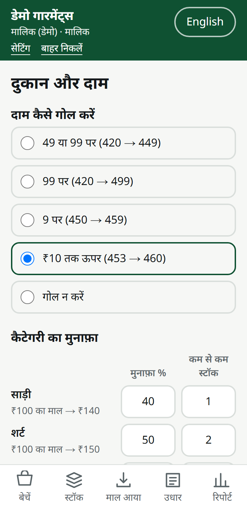
Settings → Shop and prices
Step 3 — Enter the stock already in the shop
Use माल आया → नया बिल डालें exactly as for a new bill (chapter 6), with these choices:
Supplier: choose + नया सप्लायर and name it "पुराना स्टॉक" (old stock), or use the real supplier if you know it.
Payment: choose नकद पूरा दिया (paid in full) so the app does not show money due to anyone.
Print the labels and stick them on every piece.
Do it one category at a time (all sarees, then all shirts…). It is the biggest job of the first day, and the most important — every piece needs a label to be scanned later.
Step 4 — Copy udhaar from the notebook
उधार → + नया ग्राहक → name, phone, and under पुराना उधार (कॉपी से) the amount and the date it started. See chapter 10.
Step 5 — Tomorrow's opening cash
On the first evening, close the day (chapter 12). The amount you leave in the drawer becomes the next morning's opening cash automatically.
5. A normal day, start to finish
When
What to do
Where
Morning
Open the app, check you are logged in. Plug in / pair the scanner gun if you use one.
—
Stock arrives
Enter the supplier bill, print labels, stick one on every piece before putting it on the shelf.
माल आया
Customer buys
Scan each item → tap Cash / UPI / Udhaar. Send the WhatsApp slip if the customer wants it.
बेचें
Return / exchange
Turn on Return, scan what comes back, turn it off, scan the new item.
बेचें
Udhaar customer pays
Open the customer → Money received.
उधार
Untagged item
"Item without tag" → category, size, price. Then print a label for it later.
बेचें
Evening
Count the cash drawer and close the day.
रिपोर्ट → आज का हिसाब बंद करें
Weekly (owner)
Look at Reports: best and slow items, udhaar older than 30 days, stock value. Download the CSVs as your own copy.
रिपोर्ट, उधार
6. Receiving stock — माल आया
Start a bill
Tap the माल आया tab → नया बिल डालें.
Supplier (सप्लायर): pick from the list, or + नया सप्लायर and type the name (phone optional).
Bill number and bill date from the paper bill (date is today by default).
Tap + सामान जोड़ें for each item on the bill.
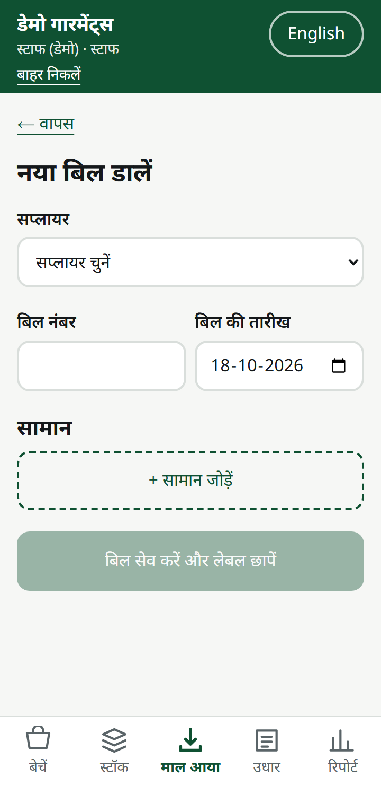
New bill
Add an item
Tap the category (साड़ी, शर्ट, बच्चों के कपड़े…).
Tap the item if it already exists, or + नया सामान and type its name. The second box is the name in the other language (optional) — fill it so the name also shows in English.
Cost price per piece (खरीद का दाम (एक पीस)) from the supplier's bill.
Pieces in each size (हर साइज़ में कितने पीस): type how many of each size came. Leave sizes that didn't come empty. Sarees and bedsheets have one "फ़्री साइज़" box; kidswear shows ages (2-3 साल…).
Check the price line, then tap बिल में जोड़ें.
The selling price
Staff see the price only: the current price for an item already in stock, or the suggested price (cost + category markup, rounded up to ₹10) for a new item. Staff cannot change it.
Owner sees a price box filled with the current or suggested price, and can type a different one. यही रखें puts the suggestion back. A changed price applies to all sizes of that item and is recorded in the price history.
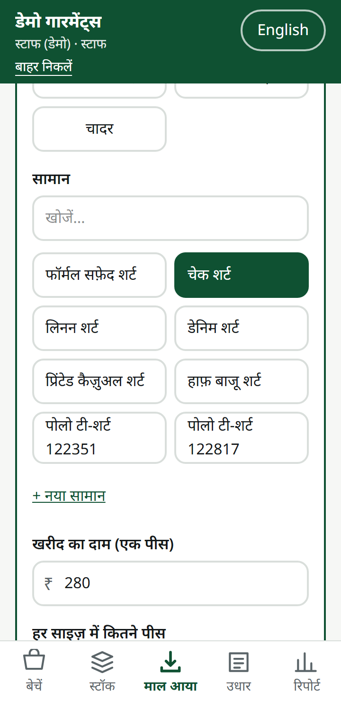
Adding an item: category, item, cost
Payment and saving
When all items are added, the bill total shows. Choose how it was paid:
Button
Meaning
Effect
बाद में (खाते में)
Pay later
Whole amount added to what you owe the supplier
नकद पूरा दिया
Paid in full
Nothing due
कुछ दिया
Part paid
Type the amount paid; the rest is due
Tap बिल सेव करें और लेबल छापें. The stock goes up straight away and the label page opens (chapter 7).
Bills list and paying a supplier later (owner)
The Receive tab lists recent bills. The owner also sees सप्लायरों का बाकी (due to suppliers). To pay: tap the bill → type the amount under कितना दिया → भुगतान जोड़ें. Each bill page also has लेबल छापें to print its labels again.
Staff see bills (supplier, date, pieces) but never the money — no cost, totals or dues.
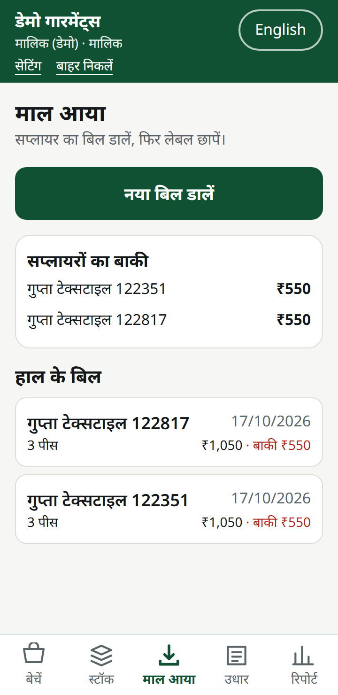
Owner: dues and bills
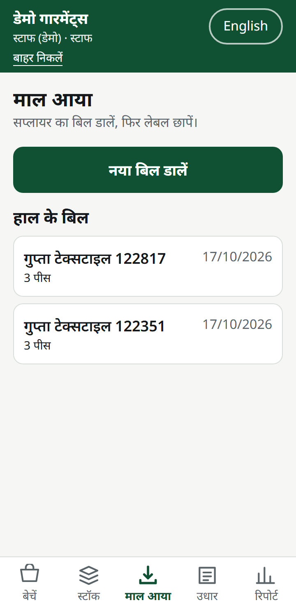
Staff: bills only
7. Printing barcode labels
The label page opens after every bill, or from Stock: tap any size to reprint its label.
Check the copies (कॉपी) for each size with − / +. After a bill it is one label per piece received.
For a part-used A4 sheet, type how many stickers are already used in शीट पर पहले से इस्तेमाल लेबल छोड़ें; printing starts after them.
Tap छापें · कुल N लेबल and choose the printer in the print window.
Each label shows the item name, size, price and a barcode with its code (like S1-00042).
Printing tips
A4 sheets print on any normal printer. In the print window set Scale 100% / Actual size and margins None.
Thermal printer: easiest from a laptop with the printer's driver installed: open the app in Chrome on the laptop and print. Set paper size 50×25 mm in the printer settings. From a phone, choose "Save as PDF" and print the PDF from the printer's own app.
Buying a printer: 50×25 mm, 203 dpi, direct thermal, USB (Bluetooth is a bonus). Examples: TSC TE244, TVS LP 46 Neo, Xprinter XP-365B.
Stick the label where it is easy to scan and won't fold — on the swing tag or the packet.
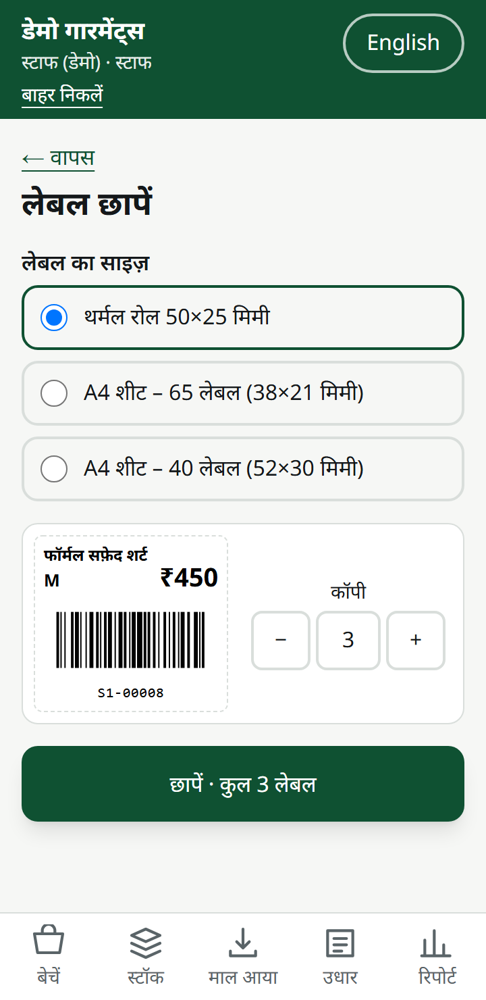
Label page
8. Selling — बेचें
Add items — three ways
Phone camera: tap कैमरे से स्कैन. The first time, allow camera access. Hold the barcode inside the white box. A beep and a buzz mean it was added. Keep scanning — the camera stays open. Tap कैमरा बंद करें when done.
Scanner gun (USB or Bluetooth): just scan. Nothing needs to be tapped first.
Type the code printed under the barcode (e.g. S1-00042) in the box and tap जोड़ें. Use this if a label is torn.
Scanning the same item again adds 1 more. Use − / + on a line to change the number of pieces. Prices cannot be changed.
Get paid
The big number at the bottom (कुल रकम) is what the customer pays. Tap one button:
नकद — cash
UPI — Google Pay / PhonePe / Paytm etc.
उधार — on credit (choose the customer — see below)
Check the money is received before tapping. A green screen ✓ बिक्री हो गई confirms the sale.
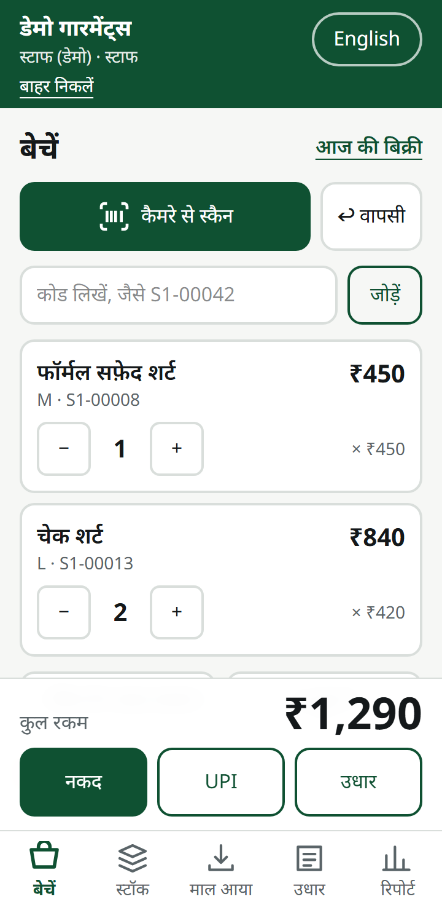
Cart with total and payment buttons
Selling on udhaar
Tap उधार. A list of customers opens: search by name or phone and tap the customer, or + नया ग्राहक → name and phone → उधार पर दें. The amount is added to what that customer owes.
After the sale
WhatsApp पर पर्ची भेजें opens WhatsApp with a slip (items, total, how paid). For an udhaar customer with a phone it opens their chat directly; otherwise choose the contact.
Tap नई बिक्री for the next customer.
If you see ⚠ stock went below zero, the app thought that item was out of stock. The sale is still saved — but tell the owner: probably a receiving entry was missed.
Today's sales
आज की बिक्री (top right of the Sell tab) lists every sale today with time, items, payment, staff name, and totals for cash, UPI and udhaar.
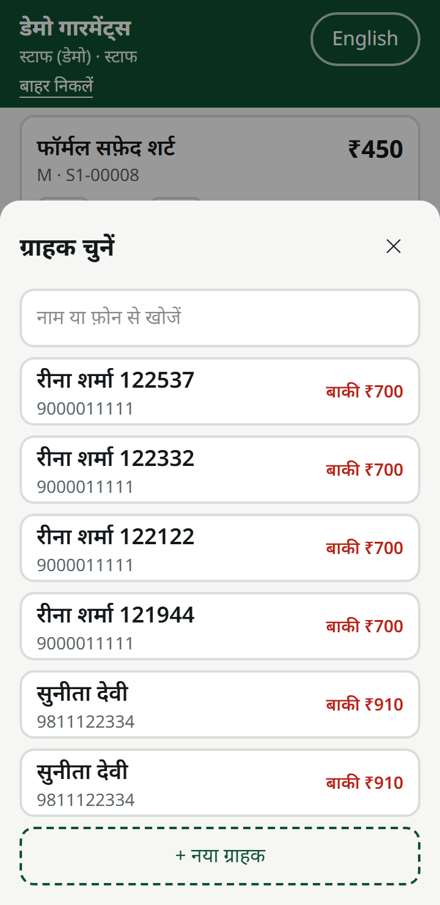
Choose the udhaar customer
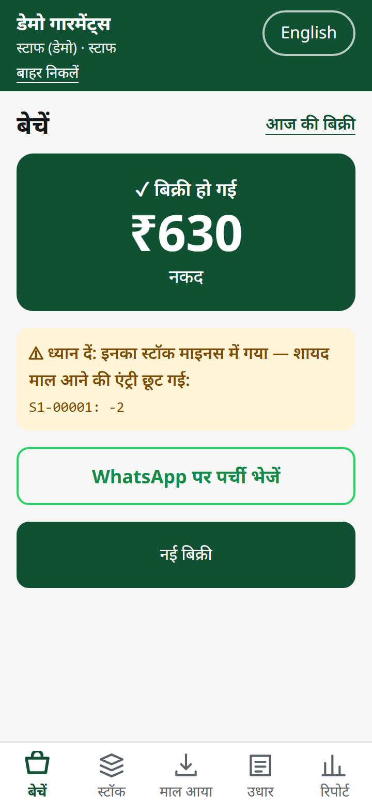
Sale done
9. Discounts, untagged items, returns and exchanges
Discount — only with the owner
Tap % छूट दें.
Type the discount in rupees (छूट ₹ में) or percent (या % में). The new total shows.
On a staff phone the owner types their own PIN in मालिक का PIN. The owner's own phone doesn't ask.
Tap लागू करें, then take payment as usual.
Every discount is saved with who approved it, and shows in the day close and reports.
Wrong PIN 5 times in 10 minutes locks discounts for the whole shop for 10 minutes. This stops anyone guessing the owner's PIN. Selling without discount still works.
छूट हटाएँ removes the discount before payment.
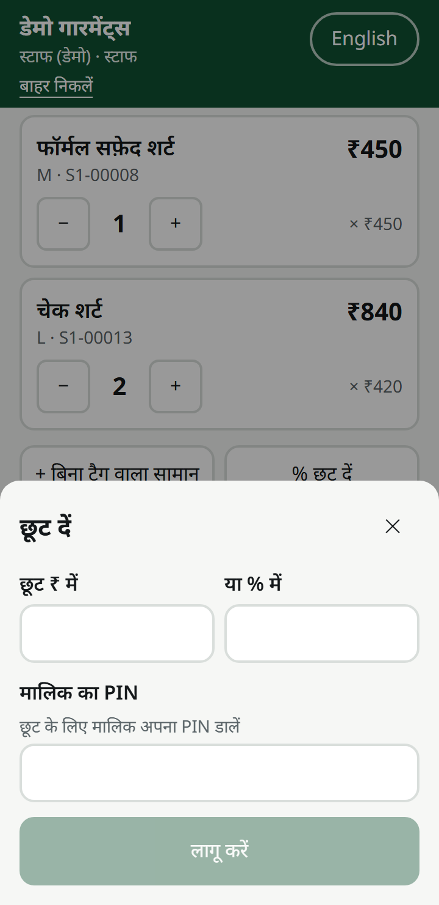
Discount with owner PIN
Item without a tag
For a piece that has no label: + बिना टैग वाला सामान → tap the category → tap the size (optional) → type the price → how many → जोड़ें. It is recorded under that category so reports stay right.
Afterwards, find the item on the Stock tab and print a label for its siblings still on the shelf, so this doesn't happen again.
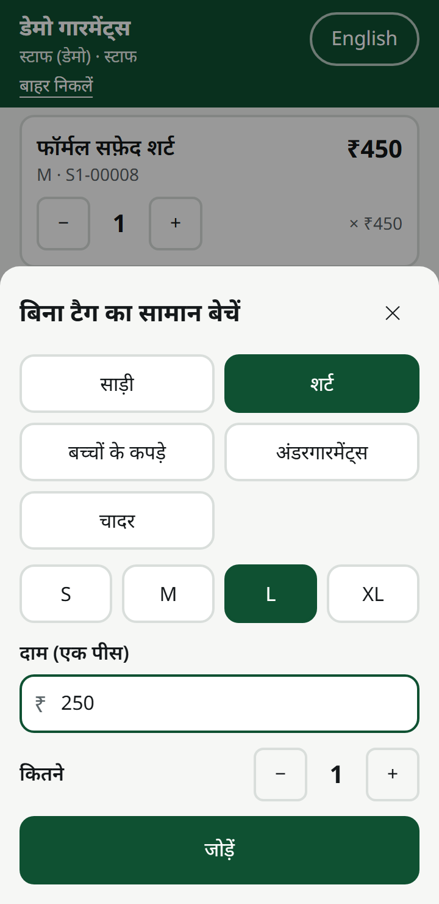
Item without a tag
Return and exchange
Tap ↩ वापसी — it turns red and a line says return is on.
Scan the item(s) the customer brings back. They show in red with ↩ वापस and a minus amount. Stock goes back up.
Exchange: tap ↩ वापसी again to turn it off, then scan the new item(s). The total becomes the difference.
If the total is plus, the customer pays as normal. If it is minus (ग्राहक को वापस), the buttons change to:
नकद वापस — give cash back
UPI वापस — send money back by UPI
उधार में जमा — reduce what the customer owes (choose the customer)
Returned items are credited at today's price (the shop is fixed-price).
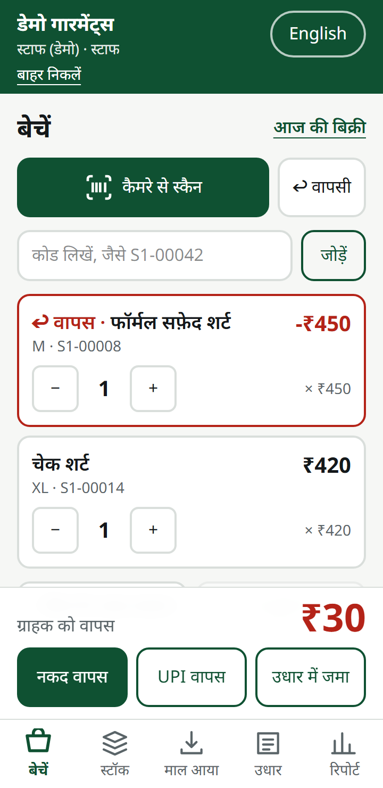
Exchange: one back, one new
10. Udhaar — उधार
The list
The green box shows the total udhaar due and how many customers owe money.
Sort with सबसे ज़्यादा (owes most), सबसे पुराना (owed longest) or नाम से (by name). Search by name or phone.
Each customer shows the amount and since how many days (X दिन से):
normal under 30 days, yellow 30–59 days, red 60 days or more.
Customers who owe nothing are hidden; tick जिन पर बाकी नहीं, उन्हें भी दिखाएँ to see them.
"Since when" counts from the oldest unpaid udhaar. Payments clear the oldest amount first, like the notebook.
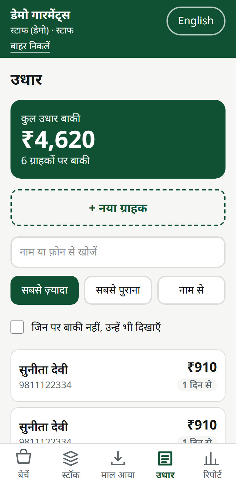
Udhaar list
Customer page
Tap a customer to see what they owe, since when, the last payment, and the account (हिसाब): every udhaar sale with the items bought, every payment and return, and the balance after each.
Money received
Tap पैसे मिले.
The full amount is filled in. For a part payment, type the amount received.
Tap नकद or UPI, add a note if you like, tap सेव करें.
You cannot enter more than is due. When everything is paid it shows सब चुकता.
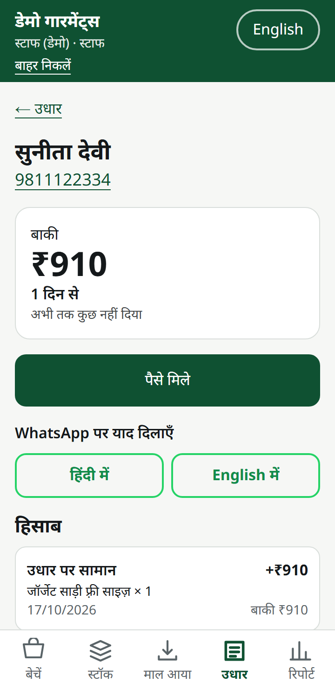
Customer page
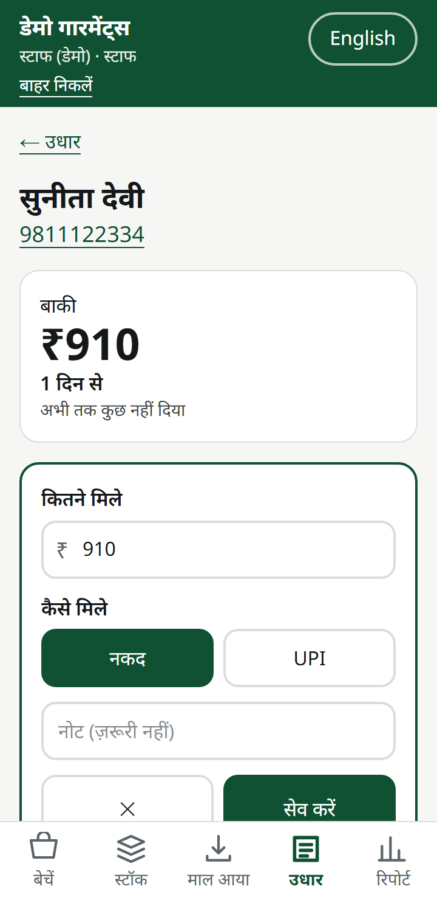
Money received
WhatsApp reminder
Under WhatsApp पर याद दिलाएँ tap हिंदी में or English में. WhatsApp opens the customer's chat with a polite ready message, for example:
"नमस्ते सुनीता देवी जी, डेमो गारमेंट्स में आपका ₹910 उधार बाकी है। सुविधा अनुसार जल्द भुगतान कर दें। धन्यवाद!"
Check it and press send. The customer needs a phone number; add one with नाम/फ़ोन बदलें at the bottom of the page.
New customer and old notebook udhaar
+ नया ग्राहक → name → mobile number (optional) → if they already owe money, under पुराना उधार (कॉपी से) type the amount and pick the date it started → सेव करें. That date is used for "since when".
Customers can also be added from the Sell screen while selling on udhaar.
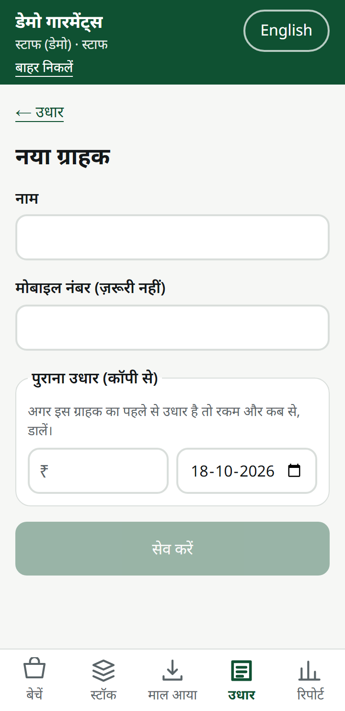
New customer with old udhaar
11. Stock — स्टॉक
Top: total pieces in the shop and how many sizes are low (कम स्टॉक).
The owner also sees stock value at cost (स्टॉक की लागत).
Items are grouped by category. Each size shows its price, pieces left and barcode code.
Yellow sizes are at or below their minimum stock — time to reorder.
Tap any size to print its label again.
A minus stock number means more were sold than were entered as received. Check the supplier bills for a missed entry.
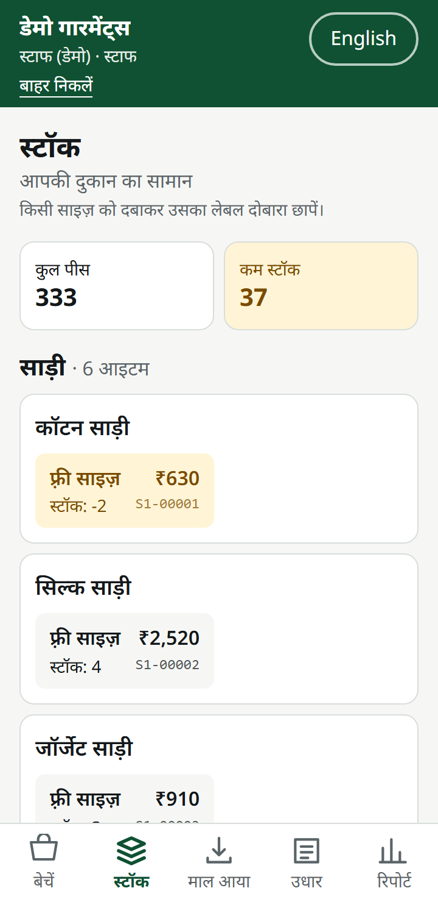
Stock (staff)
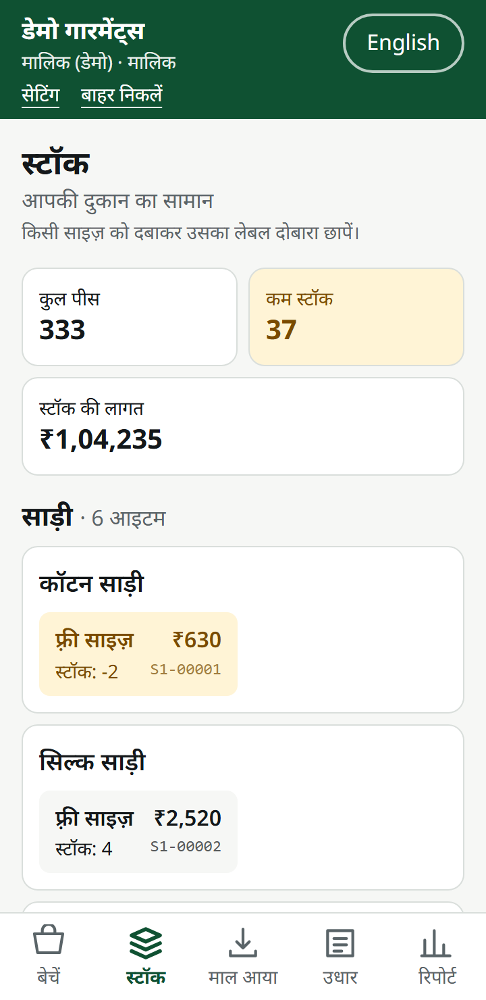
Stock (owner sees value)
12. Closing the day — दिन का हिसाब
Do this every evening before going home. Owner or staff can do it.
रिपोर्ट tab → आज का हिसाब बंद करें →.
Read the day's numbers: bills, cash sales, UPI sales, sold on udhaar, udhaar collected (cash / UPI), discounts and returns.
Cash in the drawer this morning (सुबह गल्ले में नकद) — filled from yesterday's close; correct it if needed.
Cash taken out today (दिन में नकद निकाला) — expenses, tea, supplier paid in cash, cash taken home.
The app shows what should be in the drawer (गल्ले में होना चाहिए).
Count the drawer and type it in गिनकर कितना निकला. It shows मिल गया ✓, or how much is short (कम है, red) or extra (ज़्यादा है).
Left in drawer for tomorrow (कल के लिए गल्ले में छोड़ा) — becomes tomorrow's opening cash.
Add a note if something was short, then tap हिसाब बंद करें.
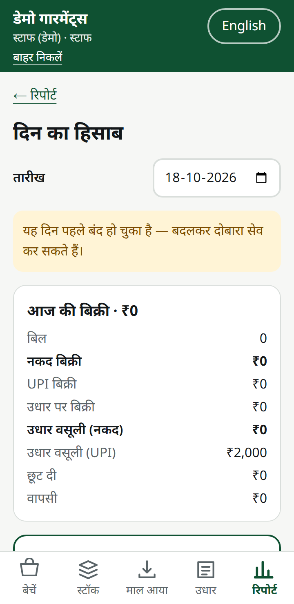
The day's numbers
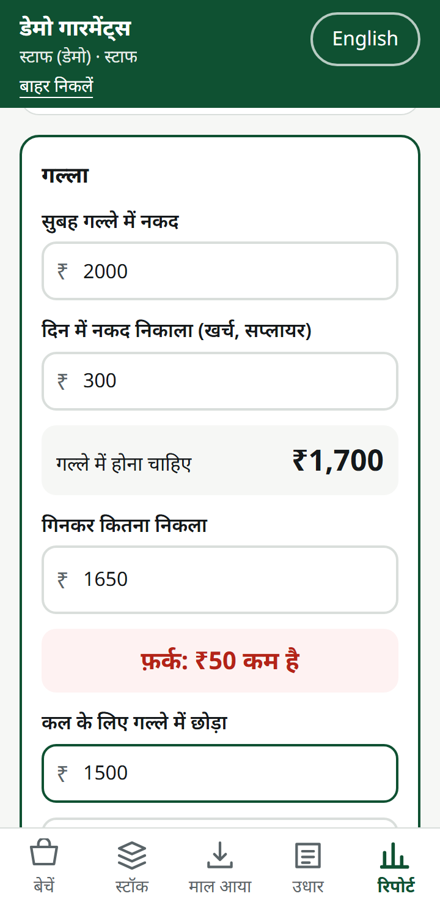
Counting the drawer
Should be in drawer = morning cash + cash sales + udhaar collected in cash − cash taken out
Example: ₹2,000 + ₹0 + ₹0 − ₹300 = ₹1,700. Counted ₹1,650 → ₹50 short.
Cash sales are already net of cash refunds. UPI money is not in the drawer, so it is not counted.
Closed the day too early? Open it again and save — it updates the same day (हिसाब दोबारा सेव करें).
Pick a past date at the top to see or redo an earlier day. Earlier days are listed at the bottom with their difference.
13. Reports and CSV downloads (owner)
Choose the period
Tap आज today, कल yesterday, 7 दिन, 30 दिन, यह महीना this month, पिछला महीना last month — or pick your own dates and tap दिखाएँ.
Headline numbers
Net sales (कुल बिक्री) — after discounts and returns.
Margin (मुनाफ़ा) — net sales minus the cost of the pieces sold, and its % of sales.
Bills, average bill, discounts, returns.
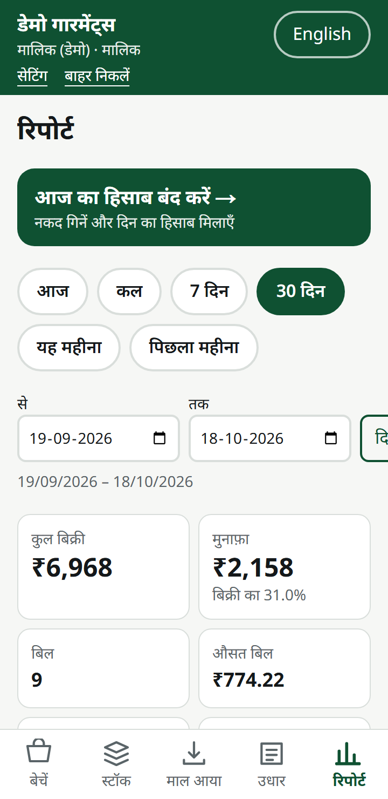
Period and headline numbers
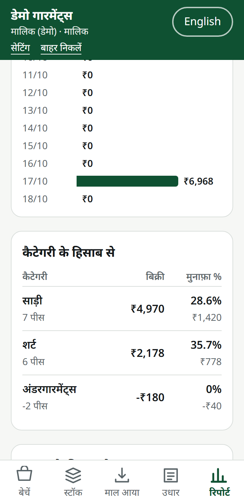
Sales by day and category
Sections
Sales by day (by week or month for long periods).
By category: sales, pieces and margin % — shows which category earns most.
By size: pieces sold per size — helps decide what sizes to buy.
Best sellers (सबसे ज़्यादा बिकने वाले): top 10 items, with stock left.
Not selling (जो नहीं बिक रहे): items in stock that did not sell in the period, with the last sale date. Candidates for a clearance offer.
Stock value at cost and at selling price.
Bill discounts are shared over the items on that bill, so margins by category add up to the real money taken.
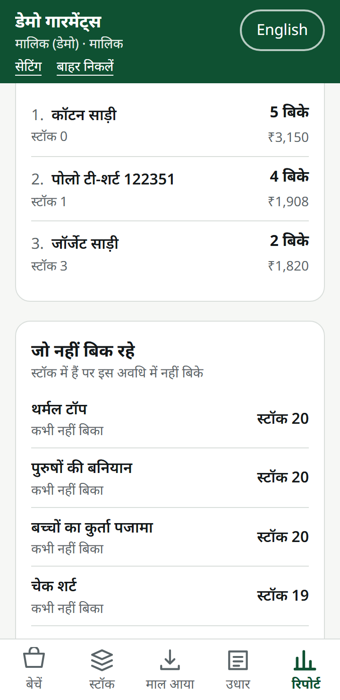
Best sellers and not selling
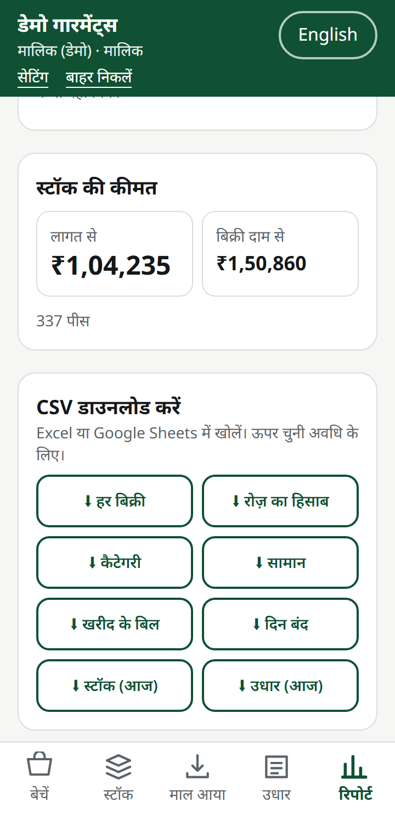
Downloads
CSV downloads (open in Excel or Google Sheets)
Button
File contains
हर बिक्री
Every item sold: date, time, payment, customer, staff, barcode, item, category, size, pieces, price, discount, cost
रोज़ का हिसाब
One line per day: bills, sales, returns, discounts, net, cost, margin
कैटेगरी
Per category: pieces, net sales, cost, margin, margin %
सामान
Per item: sold, sales, stock now, last sold
खरीद के बिल
Supplier bills: date, supplier, bill no., total, paid, due
दिन बंद
Every day close: sales by mode, expected, counted, difference
स्टॉक (आज)
Every size now: stock, min, price, cost, value
उधार (आज)
Every customer: due, since when, last payment
Download all eight once a week and keep them in a folder on the laptop or Google Drive. It is your own copy of the shop's records.
14. Settings (owner): prices, markup, staff
Tap सेटिंग under your name in the header. Two pages:
Shop and prices — दुकान और दाम
Rounding option
Example
₹10 तक ऊपर
453 → 460 (your shop)
49 या 99 पर
420 → 449, 450 → 499
99 पर
420 → 499
9 पर
450 → 459
गोल न करें
exact, next whole rupee
Prices are always rounded up, so your profit is never less than the markup you set. Changing the rule or markup only affects new items and new sizes; prices already on labels stay the same.
Markup % and min stock are set per category. Tap सेव करें.
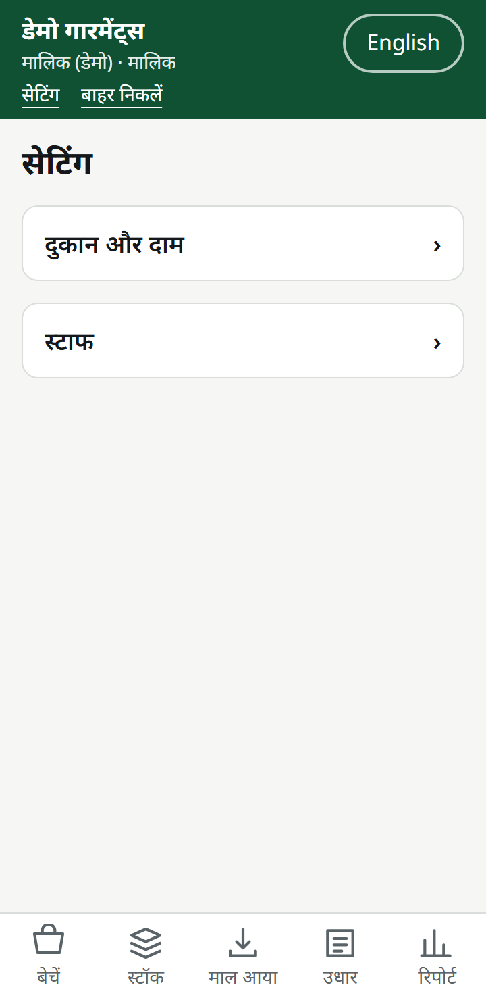
Settings
Staff — स्टाफ
Add: name, 10-digit mobile number, a 6-digit PIN → सेव करें. Each phone number can have only one account.
Switch off (बंद करें) when someone leaves — they can no longer log in. Their past sales stay in the records. चालू करें switches them back on.
Choose PINs that are not easy to guess (not 123456, not a birthday). Never tell staff the owner's PIN.
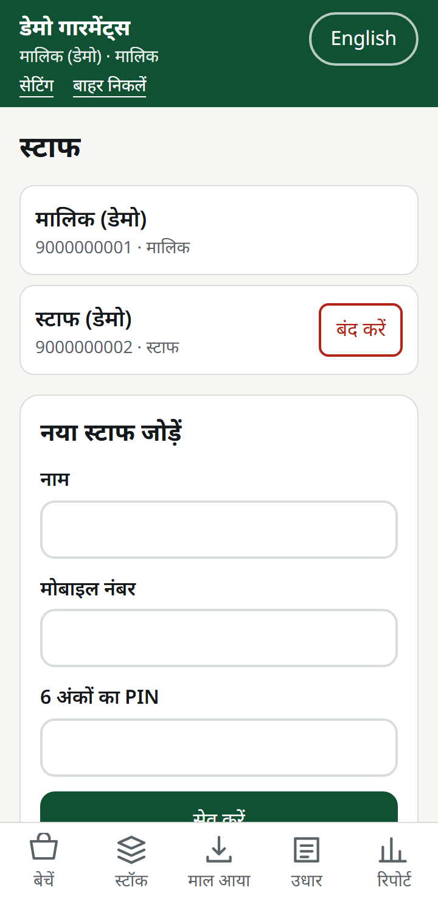
Staff
15. How the app keeps your money safe
Fixed prices. The price charged always comes from the shop's records, not from the phone. Staff can't change a price or give a discount without the owner's PIN.
Cost prices are secret. Staff can type a cost while entering a bill but can never see costs, bill totals, supplier dues, margins or reports.
Nothing can be deleted. Not by staff, not by the owner. Mistakes are fixed with a return or a new entry, so the history is always complete.
Udhaar balances can't be typed in. They only change through sales, payments, returns and the opening balance — every change is in the customer's account history.
Every discount, price change and day close is recorded with who did it and when.
Separate shops. If other shops use the app later, no shop can see another's data.
Owner PIN lock. 5 wrong owner PINs in 10 minutes block discounts for 10 minutes.
Keep your own copy: download the CSV files weekly (chapter 13). Automatic daily backups of the database are not switched on yet.
16. Problems and answers
Problem
What to do
Camera doesn't open / black screen
Allow camera: Chrome ⋮ → Settings → Site settings → Camera → allow for the app. Close other apps using the camera. Use the scanner gun or type the code meanwhile.
Camera doesn't read the barcode
More light, hold the phone 10–15 cm away and steady, barcode flat inside the white box. Creased or faded label? Type the code and reprint the label from Stock.
"यह कोड नहीं मिला" (code not found)
The code was typed wrong, or the item's bill was never entered. Enter the bill (Receive), or use "Item without tag" for now.
Scanner gun does nothing
Make sure no text box is selected (tap an empty area), the gun is charged and paired. Test it in a notes app — it should type the code and press Enter.
"⚠ stock went below zero" after a sale
Not an error — the sale is saved. More pieces were sold than were entered. Check for a missed supplier bill and enter it.
"मालिक का PIN गलत है" / discounts locked
Wrong owner PIN. After 5 wrong tries wait 10 minutes. The owner can also give the discount from their own phone.
Wrong sale (wrong item or amount)
Sales can't be deleted. Turn on Return, scan the wrong item, scan the right one, and settle the difference.
Wrong supplier bill entered
Bills can't be edited or deleted yet. Write down the details and ask the person who manages the app to correct the stock.
Staff forgot their PIN / owner forgot PIN
There is no "forgot PIN" button yet. Ask the person who manages the app to set a new PIN.
WhatsApp opens without a contact
The customer has no phone number. Add it with "नाम/फ़ोन बदलें" on their udhaar page.
Print is too big / small or labels misaligned
In the print window set Scale 100% (Actual size) and Margins None. For thermal, set paper size 50×25 mm in the printer settings.
Something shows "कुछ गड़बड़ हुई" or won't save
Check the internet, then try again. The app needs internet for every save.
App looks old after an update
Pull down to refresh, or close and reopen the app.